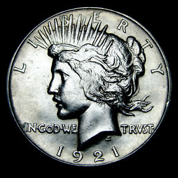

History
The Peace dollar is a United States dollar coin minted for circulation from 1921 to 1928 and in 1934 and 1935, and beginning again in 2021. Designed by Anthony de Francisci, the coin was the result of a competition to find designs emblematic of peace. Its obverse represents the head and neck of the Goddess of Liberty in profile, and the reverse depicts a bald eagle at rest clutching an olive branch, with the legend "Peace". It was the last United States dollar coin to be struck for circulation in silver.
With the passage of the Pittman Act in 1918, the United States Mint was required to strike millions of silver dollars, and began to do so in 1921, using the Morgan dollar design. Numismatists began to lobby the Mint to issue a coin that memorialized the peace following World War I; although they failed to get Congress to pass a bill requiring the redesign, they were able to persuade government officials to take action. The Peace dollar was approved by Treasury Secretary Andrew Mellon in December 1921, completing the redesign of United States coinage that had begun in 1907.
The public believed the announced design, which included a broken sword, was illustrative of defeat, and the Mint hastily acted to remove the sword. The Peace dollar was first struck on December 28, 1921; just over a million were coined bearing a 1921 date. When the Pittman Act requirements were met in 1928, the mint ceased production of the coins, but more were struck during 1934 and 1935 as a result of further legislation. In 1965, amid much controversy, the Denver mint struck over 316,000 Peace dollars dated 1964, but these were never issued, and all are believed to have been melted.
In 2021, the U.S. Mint produced a special 2021 issue Peace Dollar to celebrate the design’s 100th anniversary, with minting of the coins to continue from 2023 onwards.

Peace Dollar Value
(1921-1935)